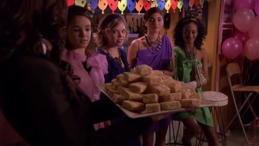
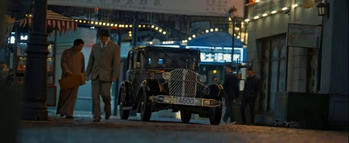
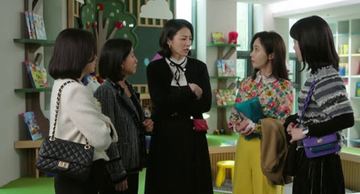
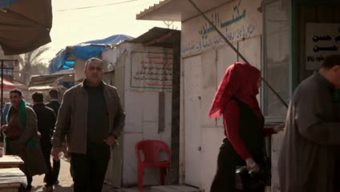

Unified multi-shot generation with Refrain. Each row is a separate request with text, video, image or joint conditioning. References differ in appearance and in duration R, which can be shorter or longer than the target shot duration D.
Highlights
Refrain generates a coherent multi-shot video in a single diffusion pass from any mix of text, image and video references, and renders references with clashing styles in one consistent look.
Self-supervised reconstruction learning. Reference shots from the same source video are edited independently, and the model learns to recover the unedited source under a shared style prompt. It suppresses style conflicts while keeping reference content and motion. DurMix-300K provides these pairs with variable reference durations.
Unified sparse conditioning (A²O). One backbone handles T2V, V2V, TI2V and TIV2V. References are placed sparsely on a shared temporal canvas, with no added conditioning modules.
Shot-Debiased Consistency (SDC). A cross-shot style metric that compares style change with what real videos show at the same amount of content change, calibrated on a 2.14M-video bank.
Abstract
A comic-book character, a photorealistic cityscape, an oil-painted coffee cup: such stylistically diverse references provide visual guidance across shots and frames, yet generating a coherent multi-shot video that unifies their visual styles while preserving subject identities and scene content remains challenging. Existing methods maintain cross-shot continuity through additional attention control or memory processing. However, they struggle to resolve disparate per-shot styles or handle reference–target duration mismatches within a single framework.
To tackle this, we introduce Refrain, a unified model that learns cross-shot consistency through a self-supervised reconstruction task: reference clips from the same original video are deliberately perturbed with distinct visual edits, challenging the model to recover the unedited source footage under a shared style prompt. In this way, Refrain learns to suppress conflicting stylistic artifacts while faithfully retaining reference content and motion dynamics. Operating on the A²O principle (Any Reference, Any Duration, One Timeline), Refrain maps image and video references onto a shared temporal canvas without auxiliary conditioning modules. For evaluation, experiments show that standard CLIP or DINO metrics frequently overlook stylistic clashes or misinterpret intended narrative cuts as inconsistency. We therefore propose Shot-Debiased Consistency (SDC), which uses an extensive real-video bank to establish a baseline for style variation associated with content changes. By discounting this baseline, SDC evaluates cross-shot style shifts against real-world distributions. We further construct DurMix-300K, a dataset pairing stylistically altered clips of varying lengths with their original video sequences, to train the model. Extensive experiments demonstrate that Refrain achieves state-of-the-art performance in cross-shot consistency, while excelling at shot timing, reference adherence, and text alignment.
Self-supervised reconstruction and unified conditioning. (A) Reconstructing coherent source videos from independently edited references. (B) Joint multi-shot generation with sparse references on one timeline. Black marks occupied mask positions.
(A) DurMix-300K: references that disagree on purpose
A coherent multi-shot source video is cut into shots. The first frame of selected shots is edited with one of 61 instructions (lighting, background, style transfer, subject appearance, …), the clip is optionally cropped or extended to a new length, and the edit is propagated through the clip with depth-conditioned video generation. Each shot is edited independently, so the references clash with each other, while the unedited source video remains the reconstruction target. To reconstruct it, the model has to keep what the references show and remove how they were restyled.
(B) One canvas, one trajectory
Reference canvas + occupancy mask. All conditions are encoded by the 3D VAE and written at their exact positions on the target timeline; empty slots are generated. An image anchor occupies one latent frame.
Sparse placement for any duration. A reference shorter than its shot fills only part of the shot; a longer one is mapped onto the shot's latent frames by frame selection that keeps its first and last frame. Latents are never interpolated.
Shot-aware RoPE. Each token carries its shot coordinate plus a per-shot offset, so the DiT knows where cuts are and which tokens belong together.
Shared style prompt + per-shot text. A global style description applies to every shot; each shot can add its own description or only a reference instruction.
The HunyuanVideo-1.5 DiT backbone (8.49B) is unchanged. Training runs in three stages: multi-shot T2V pre-training, reconstruction from references that match their target length, and reconstruction from variable-duration DurMix references.
Shot-Debiased Consistency (SDC)
A cut to a new character or location naturally changes CLIP/DINO features, so those metrics read intended narrative changes as inconsistency, and they barely react to a real style clash. SDC asks instead: given how much the content changed between two shots, is the style change unusually large compared with real videos?
SDC construction. (A) Within- and cross-shot energies. (B) Content–style calibration. (C) The calibration slope κ is stable from 1K to 2.14M real videos.
Shot energies. DINOv2 content features and two style heads (CSD, VGG AdaIN statistics) are compared across and within shots, giving a content energy and a style energy for every shot pair.
Real-video calibration. Style energy is corrected for its dependence on content energy (κ ≈ 0.399) and converted into a conditional survival rank within the real-video bank.
Pooling. Ranks from the two style heads are fused 2:1 and averaged over shot pairs.
Qualitative validation. Top: a style edit on one shot drops SDC by 90–99% while CLIP and ViCLIP barely move. Bottom: coherent cuts between very different shots keep a high SDC even though DINO similarity is near zero.
Comparison with Baselines
The three requests from the paper's qualitative comparison. Refrain, StoryMem and Phantom receive the same per-shot references and prompts. The references are restyled independently on purpose; Refrain follows their content and shot descriptions while rendering all shots in one shared style, whereas StoryMem and Phantom copy each reference's style or drift away from the references.
V2V
Communal meal in the sun
3 shots · 8.0 s · text + video references
Refrain (ours)
StoryMem
Phantom
Shared styleDocumentary, Realistic. The style is observational, capturing candid moments of social interaction. Bright, direct natural sunlight from a high angle, creating strong highlights and defined shadows. The lighting is high-key, contributing to the cheerful and open atmosphere. Joyful, social, and convivial. The video captures the warmth and intimacy of a community gathering, filled with laughter, conversation, and shared meals.
Shot 10.0 – 2.5 s
VideoCamera / Lens Filter · 1.5 s clip
Under bright sunshine, a large group of people are gathered for a communal meal in a rustic courtyard.
text only
Shot 22.5 – 4.7 s
The scene is filled with lively interactions: two men share a laugh at a table laden with food, an older man affectionately hugs another from behind, and a young couple sits intimately by a stone wall.
Shot 34.7 – 8.0 s
VideoSpatial Relation Change · 4.2 s clip
The atmosphere is one of warmth, connection, and celebration, captured with natural light that highlights the joyful expressions and social bonds of the attendees.
TI2V
Reading a comic under blue light
2 shots · 5.0 s · text + image anchor
Refrain (ours)
StoryMem
Phantom
Shared styleRealistic, contemporary drama. Cool, soft key light from the front-left, creating subtle shadows on the right side of the subject's face. The background is dimly lit with some bokeh highlights, suggesting a low-key lighting setup. Contemplative and serious. The cool lighting and the character's focused, somber expression create a mood of quiet introspection and concern.
text only
Shot 10.0 – 1.7 s
In a dimly lit room with cool blue lighting, a young man's hands are shown holding an open black-and-white comic book.
Shot 21.7 – 5.0 s
Imageunedited frame @ 3.5 s
The scene then cuts to a close-up of his face.
TIV2V
Encounter in a Chinese courtyard
5 shots · 10.3 s · text + image anchor + video references
Refrain (ours)
StoryMem
Phantom
Shared styleRealistic, historical drama aesthetic. Bright, diffuse natural daylight, suggesting an overcast sky or indirect sunlight. The lighting is even and soft, with minimal harsh shadows, creating a clear and gentle visual tone. Initially serene and tranquil, the atmosphere shifts to one of surprise and slight tension with the unexpected arrival of the second woman.
Shot 10.0 – 1.2 s
VideoSubject Appearance · 0.7 s clip
In a beautifully landscaped traditional Chinese courtyard, a woman dressed in a flowing light blue and white gown walks calmly across the gravel path.
Shot 21.2 – 5.2 s
Imageunedited frame @ 3.2 s
The scene is peaceful, with wooden buildings, a small bridge over a pond, and ornate lanterns.
Shot 35.2 – 7.2 s
VideoSubject Appearance · 2.7 s clip
Her walk is interrupted by the arrival of another woman in a vibrant red dress, who runs across the bridge.
text only
Shot 47.2 – 9.0 s
The first woman stops, her expression shifting to surprise as she greets the newcomer.
Shot 59.0 – 10.3 s
VideoStyle Transfer · 1.7 s clip
The two women then engage in a conversation, their expressions conveying a mix of shock and inquiry.
Short reference, longer target (3.7 s → 6.5 s). Refrain keeps the pace of the camera gesture and brings the referenced shot into the style of the surrounding shots.
Long reference, shorter target (3.9 s → 2.8 s). Refrain condenses the action while keeping the reaction, the hand gesture and the head turn at a natural pace.
Gallery
All videos are generated by Refrain in a single pass on held-out Refrain Benchmark requests. Next to each video, every shot lists its condition (a video reference with its edit type and length, an image anchor, or text only) and its prompt. References are deliberately restyled per shot; Refrain renders them in one consistent style.
TI2V
Party treats
3 shots · 5.0 s · text + image anchor
Shared styleRealistic, contemporary teen drama style. Dim, warm ambient lighting with colored party lights (pink, purple) creating a festive but intimate feel. Soft key light on the characters' faces. A lively and social party atmosphere, with a hint of playful tension or anticipation among the characters.
text only
Shot 10.0 – 1.7 s
In a dimly lit room decorated for a party with colorful balloons and banners, a woman in a black suit holds a tray piled high with rice krispie treats.

Shot 21.7 – 3.5 s
Imageunedited frame @ 2.8 s
She offers them to a group of young women.
text only
Shot 33.5 – 5.0 s
One woman in a pink dress looks on with a skeptical expression, while another in a blue dress looks on with a slight smile.
TI2V
Night street, vintage car
4 shots · 7.2 s · text + image anchor
Shared styleRealistic, with a strong nostalgic and film noir aesthetic. Low-key artificial lighting from street lamps, neon signs, and string lights, creating a high-contrast chiaroscuro effect with deep shadows and warm, specular highlights on the wet ground. Mysterious, tense, and nostalgic, evoking a classic film noir or historical drama feel.
text only
Shot 10.0 – 2.8 s
The scene opens on a high-angle view of a bustling, wet cobblestone street at night, filled with pedestrians and vintage cars under the glow of neon signs.

Shot 22.8 – 4.0 s
Imageunedited frame @ 3.5 s
The camera then focuses on a black vintage sedan as it drives through the street, passing by men in suits.
text only
Shot 34.0 – 5.8 s
The camera tracks the car as it moves, eventually settling on a close-up of a woman sitting pensively in the back seat.
text only
Shot 45.8 – 7.2 s
Her face, illuminated by the passing city lights, holds a serious and watchful expression as she gazes out the window.
V2V
Film-noir close-up
3 shots · 6.3 s · text + video references
Shared styleRealistic, Psychological Thriller, Film Noir. High-contrast key lighting, likely from a single source, creating dramatic shadows on the subjects' faces and enhancing the tense mood. Tense, unsettling, and psychologically charged, with a strong sense of suspense and unease.
Shot 10.0 – 1.8 s
VideoStyle Transfer · 1.7 s clip
In a stark, black and white room, a heavy-set man with glasses smiles and chuckles, his face filling the frame.
text only
Shot 21.8 – 4.7 s
The camera slowly zooms in, intensifying his unsettling expression.
Shot 34.7 – 6.3 s
VideoLighting / Weather · 1.5 s clip
The shot cuts back to the man with glasses, who continues to smile and chuckle, his face partially in shadow and his expression still unsettling.
V2V
Woman on a green sofa
3 shots · 5.2 s · text + video references
Shared styleRealistic, cinematic drama. Soft, warm indoor lighting. The first shot uses a key light from the side, creating gentle shadows. The final shot employs dramatic, low-key lighting with a strong side light that creates high contrast and deep shadows. Tense, somber, and dramatic. A feeling of quiet anticipation and unspoken conflict permeates the scenes.
Shot 10.0 – 2.0 s
VideoStyle Transfer · 1.9 s clip
text only
Shot 22.0 – 3.3 s
The lighting is warm and soft, highlighting her pensive mood.
Shot 33.3 – 5.2 s
VideoLighting / Weather · 1.7 s clip
V2V
Tense talk in a bar
5 shots · 9.0 s · text + video references
Shared styleRealistic, cinematic drama. The shallow depth of field and warm color grading give it a filmic quality. Soft, warm key light from the side, illuminating the characters' faces against a dark background. The lighting creates a high-contrast, intimate mood with gentle shadows. Intimate and tense. The close-up shots and dim lighting create a feeling of a serious, private conversation with underlying emotional conflict.
Shot 10.0 – 2.5 s
VideoBackground Retexture · 2.0 s clip
text only
Shot 22.5 – 4.3 s
The scene is composed of alternating close-up shots, focusing on their subtle facial expressions.
Shot 34.3 – 6.0 s
VideoLighting / Weather · 1.0 s clip
text only
Shot 46.0 – 7.8 s
The soft, directional lighting highlights their faces, creating an intimate yet strained atmosphere as they speak to each other.
Shot 57.8 – 9.0 s
VideoStyle Transfer · 0.5 s clip
V2V
Stylish brick-wall bar
5 shots · 6.3 s · text + video references
Shared styleRealistic with a cinematic, moody aesthetic. The lighting and color grading give it a slightly stylized, dramatic feel. Low-key lighting with multiple sources. Warm, soft light emanates from cylindrical table lamps and backlights within the wall shelves, creating a cozy yet dramatic effect. Cool blue and purple ambient light fills the space, adding depth and a modern, stylish feel. Tense and expectant. The dim lighting and the characters' focused expressions create a feeling of anticipation and seriousness, as if a significant event is about to unfold.
Shot 10.0 – 1.2 s
VideoStyle Transfer · 0.7 s clip
The scene unfolds in a stylish, dimly lit bar with a prominent red brick wall.
text only
Shot 21.2 – 2.2 s
A man with a top-knot and glasses, wearing a floral shirt, sits at a glass table, holding a drink.
Shot 32.2 – 3.3 s
VideoLighting / Weather · 1.5 s clip
He calls out for a waiter, and the camera cuts to another man in a plaid shirt who responds.
text only
Shot 43.3 – 4.7 s
The first man then stands up, his expression serious and focused as he looks towards the right, creating a tense and expectant atmosphere.
Shot 54.7 – 6.3 s
VideoStyle Transfer · 0.7 s clip
The first man then stands up, his expression serious and focused as he looks towards the right, creating a tense and expectant atmosphere.
V2V
Chef at the racetrack
3 shots · 9.8 s · text + video references
Shared styleRealistic with a nostalgic, filmic quality, reminiscent of a home movie or a classic family drama. Bright, diffuse natural daylight, creating soft shadows and an evenly lit scene. The light source is high and overhead, typical of an outdoor daytime setting. Joyful, nostalgic, and heartwarming. The scene conveys a sense of happy family moments and cherished memories being captured.
Shot 10.0 – 1.3 s
VideoStyle Transfer · 1.7 s clip
A man dressed as a chef joyfully waves from behind a guardrail at a racetrack.
text only
Shot 21.3 – 3.3 s
The scene cuts to a happy family in the crowd, with a young boy waving back from his father's shoulders.
Shot 33.3 – 9.8 s
VideoBackground Retexture · 3.7 s clip
The chef then raises a Polaroid camera, takes a picture, and proudly displays the developing photo with a wide smile, capturing a moment of pure happiness.
V2V
Supernatural horror
4 shots · 8.5 s · text + video references
Shared styleRealistic with strong horror and supernatural elements. The visual style is cinematic and dramatic, using high-contrast lighting and unsettling imagery. Dramatic, high-contrast chiaroscuro lighting. A strong, cool-toned key light from the side illuminates the subject, while the rest of the scene is plunged into shadow. The fire provides a secondary, warm, flickering light source. Intensely horrific and suspenseful. A palpable sense of terror, panic, and supernatural dread permeates the scene.
Shot 10.0 – 2.8 s
VideoStyle Transfer · 3.9 s clip
text only
Shot 22.8 – 4.0 s
Her face, illuminated by a harsh side light, contorts in fear as she looks at something off-screen.
text only
Shot 34.0 – 5.0 s
The scene cuts to a grotesque, horned figure engulfed in flames, its face twisting in agony.
Shot 45.0 – 8.5 s
VideoCamera / Lens Filter · 3.7 s clip
V2V
Couple sharing a meal
3 shots · 10.3 s · text + video references
Shared styleRealistic, contemporary drama. Soft, diffuse frontal lighting that evenly illuminates the subjects, minimizing shadows and creating a bright, clean look. The light source appears to be large and off-camera. Intimate and casual, with a lighthearted and slightly playful mood between the two individuals.
Shot 10.0 – 3.0 s
VideoBackground Retexture · 3.7 s clip
text only
Shot 23.0 – 7.5 s
The scene opens with a close-up of the man speaking to the woman, who smiles in response.
Shot 37.5 – 10.3 s
VideoStyle Transfer · 2.2 s clip
TIV2V
Thoughtful pause at a desk
3 shots · 9.3 s · text + image anchor + video references
Shared styleRealistic and cinematic, with a soft-focus aesthetic that creates a gentle, intimate mood. Soft, warm key light from a desk lamp on the left, creating a gentle glow on the subject. A warm, out-of-focus practical lamp provides ambient backlight, enhancing the cozy atmosphere. Contemplative, quiet, and slightly melancholic. The mood is introspective and personal, focusing on a moment of thoughtful pause.
Shot 10.0 – 2.3 s
VideoStyle Transfer · 1.5 s clip
In a warmly lit bedroom, a young woman with her hair up is initially focused on a task.
Shot 22.3 – 3.8 s
Imageunedited frame @ 3.2 s
The camera then cuts to a close-up of her hands as she handles a pen over a notebook.
Shot 33.8 – 9.3 s
VideoSpatial Relation Change · 3.4 s clip
Returning to her face, she looks up from her work, her expression shifting to one of deep thought as she gazes off-screen.
TIV2V
Gossip in a classroom
4 shots · 9.7 s · text + image anchor + video references
Shared styleRealistic. The video is shot in a contemporary, naturalistic style typical of a modern television drama. Bright, even overhead lighting, likely from fluorescent fixtures. It creates a flat, high-key look with minimal shadows, illuminating the entire scene clearly. Tense and gossipy. The characters' expressions and body language convey a sense of shock, concern, and intense discussion, creating a dramatic and slightly conspiratorial mood.
Shot 10.0 – 2.3 s
VideoCamera / Lens Filter · 3.2 s clip
In a brightly lit children's classroom, a group of five women are gathered in a tense discussion.
text only
Shot 22.3 – 3.5 s
One woman, dressed in black, reacts with a shocked expression, her mouth agape.

Shot 33.5 – 7.0 s
Imageunedited frame @ 5.3 s
Another woman in a floral dress holds a folder and looks on with a worried face, while a third in a striped sweater speaks with urgency.
Shot 47.0 – 9.7 s
VideoMotion Change · 1.4 s clip
The scene is filled with colorful decorations and bookshelves, contrasting with the serious nature of their conversation.
TIV2V
Sunlit outdoor market
3 shots · 9.8 s · text + image anchor + video references
Shared styleDocumentary. Bright, direct natural sunlight from a high angle, creating strong, hard-edged shadows. The lighting is high-key, illuminating the scene clearly with minimal diffusion. Documentary and observational, capturing a slice of daily life in a bustling, sunlit outdoor market. The mood is neutral and candid, focusing on the interactions and environment.
Shot 10.0 – 3.8 s
VideoStyle Transfer · 3.7 s clip

Shot 23.8 – 6.7 s
Imageunedited frame @ 5.3 s
Initially, two men are seen at a table covered with a patterned cloth, examining documents.
Shot 36.7 – 9.8 s
VideoStyle Transfer · 3.0 s clip
Quantitative Results
Refrain Benchmark
300 requests (30 T2V, 30 TI2V, 120 V2V, 120 TIV2V) built from held-out videos with deliberately conflicting references.
Method
Params (B)
FLOPs (P) ↓
MAE (s) ↓
CLIP-T ↑
TA ↑
SDC ↑
HunyuanVideo1.5
8.49
324.4
0.802
0.212
−0.386
0.090
Phantom
14.29
648.7
–
0.203
−0.675
0.130
RefAlign
14.29
807.7
–
0.204
−0.530
0.125
StoryMem
29.80
493.2
–
0.197
−0.679
0.175
VACE
17.34
608.9
–
0.217
−0.336
0.108
Refrain (ours)
8.49
324.4
0.199
0.222
−0.221
0.315
Method
Inter-shot Semantic ↑
Inter-shot Subject ↑
Inter-shot Scene ↑
Ref. Semantic ↑
Ref. Subject ↑
Ref. Background ↑
HunyuanVideo1.5
0.566
0.439
0.478
–
–
–
Phantom
0.491
0.345
0.385
0.556
0.450
0.376
RefAlign
0.493
0.341
0.361
0.614
0.469
0.448
StoryMem
0.708
0.489
0.531
0.478
0.412
0.388
VACE
0.492
0.362
0.361
–
–
–
Refrain (ours)
0.710
0.494
0.491
0.737
0.671
0.674
FLOPs are analytical denoising estimates for a 480×832, 241-frame, three-shot video with three 49-frame references under each method's own sampling schedule, excluding encoders and VAE decoding. “–” means the metric does not apply to that method's protocol.
Ablations
Reference-editing supervision
Train
Test
SDC ↑
Independent
Independent
0.315
Independent
Shared
0.299
Shared
Independent
0.301
Shared
Shared
0.304
Shot coordinates and placement
Coords / placement
MAE ↓
SDC ↑
Shot-aware / Sparse
0.199
0.315
Shot-aware / Resample
0.233
0.310
None / Sparse
0.281
0.304
None / Resample
0.293
0.289
Pure T2V (no references)
Training
SDC ↑
T2V pre-training
0.253
+ independent edits
0.303
Training on independently edited references also makes text-only generation more consistent.
Validating SDC
Single-shot style edit (108,909 videos)
Score before → after
Detected @ 5% FPR ↑
CLIP
0.836 → 0.711
48.6%
ViCLIP
0.609 → 0.426
38.6%
DINO
0.385 → 0.297
10.0%
SDC
0.346 → 0.047
78.0%
Human study: six professional raters rated 150 clips (real splices, natural multi-shot clips and generated clips). SDC agrees with the mean rating at ρ = 0.68 and separates consistent from inconsistent clips with AUC 0.90 (95% CI [0.84, 0.95]); on real footage it reaches AUC 0.97.
Citation
@article{yan2026refrain,
title = {Refrain: Learning Multi-Shot Consistency from Inconsistent References for A$^2$O Video Generation},
author = {Yan, Hongru and Wu, Yue and Zhang, Jian-Wei and Xie, Liangbin and Zheng, Mingzhe and Gao, Shenghua},
journal = {arXiv preprint arXiv:2611.27806},
year = {2026}
}